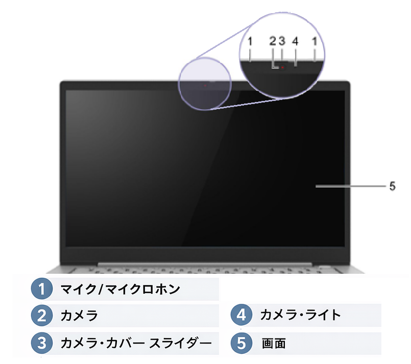
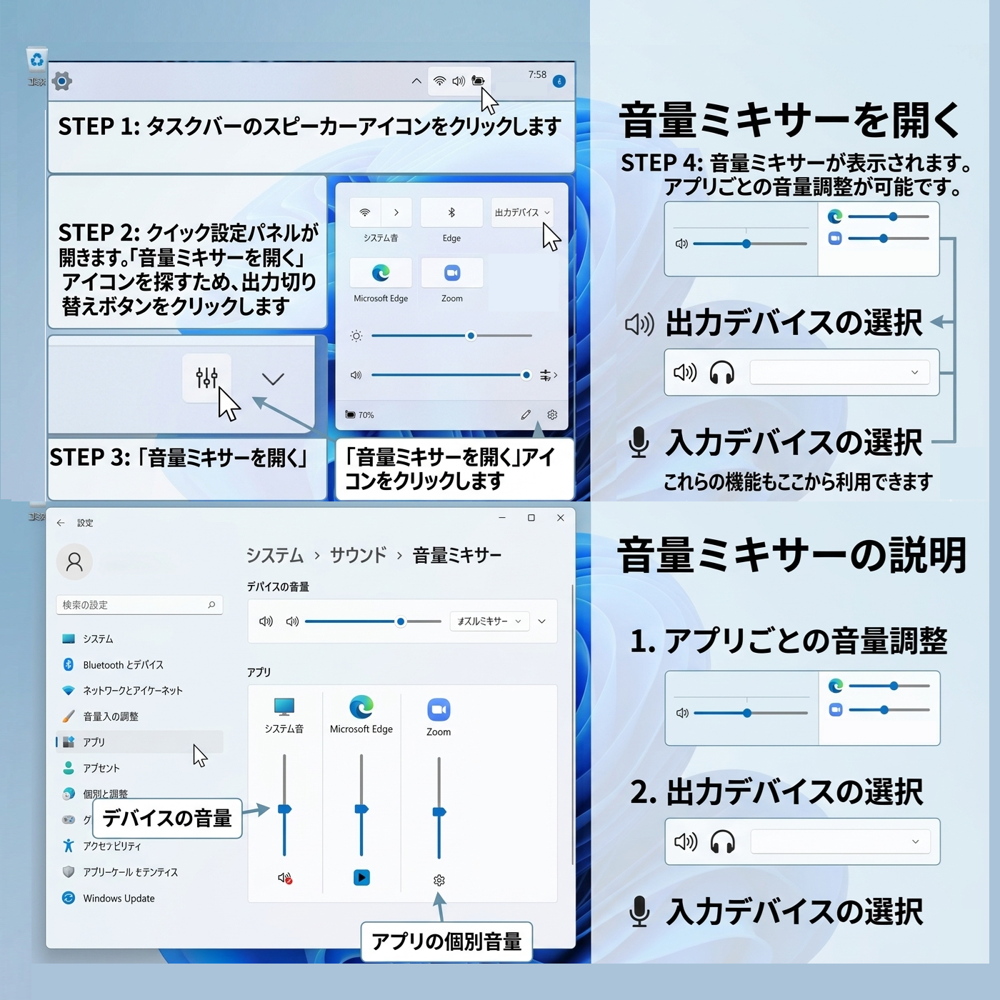
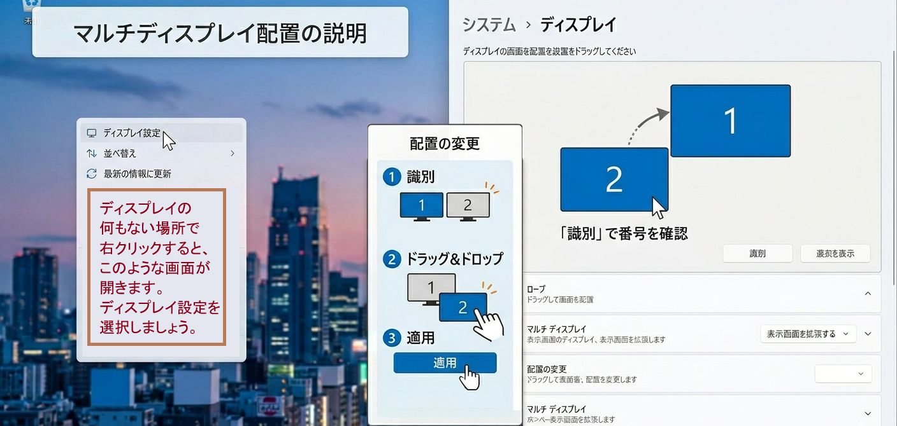

1. Web面接前に確認しておきたいこと
第1章では、Web面接の前に確認しておきたい項目を整理します。機材、ツール操作、画面環境を事前に整えておくことで、面接当日の進行と印象を安定させやすくなります。
第1章では、Web面接の前に確認しておきたい項目を整理します。機材、ツール操作、画面環境を事前に整えておくことで、面接当日の進行と印象を安定させやすくなります。
本項では、ノートパソコンのハード・ソフトウェア設定や、Web会議ツールの説明を行います。普段は意識せず使えている方も多いと思いますが、面接当日に慌てないよう、改めて確認しましょう。
サムネイルから同一ページ内の該当セクションへ移動します。プラットフォーム詳細だけは別ページに統合しています。
まずは、面接で使用するパソコンや周辺機器の扱いに慣れておきましょう。映像と音声が安定して出る状態を作ることはWeb面接における第一歩です。
当校で貸し出すノートパソコンのカメラは、画面上部のスライド式カバーで隠れています。音量は音量ミキサーやキーボードのFキーで調整できるため、事前に操作方法を確認しておくと安全です。

カメラ位置や画面上部の状態を先に確認しておくと、入室直前に慌てにくくなります。
音声と映像は、面接時の第一印象を大きく左右します。あわせて、資料を見ながら自然に話せる画面配置も整えておくと安心です。
ノートパソコン側をWeb会議ツール用にし、外部モニターを資料表示用にするなど、自身に合ったレイアウトを決めておきましょう。

音量ミキサーを一度開いておくと、当日にマイクと出力の状態を確認しやすくなります。

資料確認用と会議画面用を分けると便利ですが、視線の流れとカーソル位置も確認しておく必要があります。
話の内容だけでなく、映り方や周囲の環境も面接の印象に影響します。通知の停止もあわせて、集中を妨げる要素を減らしておきましょう。
通知音やポップアップは集中を切らしやすいため、面接前の数分で必ず再確認してください。生活音が入りにくい場所かどうかも印象に直結します。

顔の位置、明るさ、背景の整理を一度カメラ越しに見ておくと、面接中の印象が安定します。
主な対象ツールとして、Google Meet はブラウザから参加しやすく、Zoom は映りの補正に強く、Microsoft Teams は共有資料を見返しやすい特徴があります。
このセクションでは概要のみを扱います。各ツールの詳細操作は統合したプラットフォーム詳細ページで確認してください。